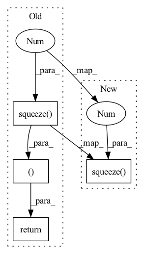

Pattern ID :726

Before Change
o_en, o_en_dp, x_mask, g = self._forward_encoder(x, x_lengths, g)
o_dr_log = self.duration_predictor(o_en_dp.detach(), x_mask)
o_de, attn = self._forward_decoder(o_en, o_en_dp, dr, x_mask, y_lengths, g=g)
return o_de, o_dr_log.squeeze(1), attn
def inference(self, x, x_lengths, g=None): // pylint: disable=unused-argument
Shapes:
After Change
g=g)
outputs = {
"model_outputs": o_de.transpose(1, 2),
"durations_log": o_dr_log.squeeze(1),
"alignments": attn
}
return outputs
In pattern: SUPERPATTERN
Frequency: 3
Non-data size: 4
Instances
Fragment ID: 2735491
Project Name: coqui-ai/tts
Commit Name: f121b0ff5d55c7ad373bd2fe343c1996a0a5c0cf
Time: 2021-06-22
Author: egolge@coqui.ai
File Name: TTS/tts/models/speedy_speech.py
M Class Name: SpeedySpeech
N Class Name: SpeedySpeech
M Method Name: forward(6)
N Method Name: forward(6)
M Parent Class: nn.Module
N Parent Class: nn.Module
M File Name: TTS/tts/models/speedy_speech.py
N File Name: TTS/tts/models/speedy_speech.py
M Start Line: 168
M End Line: 168
N Start Line: 190
N End Line: 204
'>
Before Change
o_en, o_en_dp, x_mask, g = self._forward_encoder(x, x_lengths, g)
o_dr_log = self.duration_predictor(o_en_dp.detach(), x_mask)
o_de, attn = self._forward_decoder(o_en, o_en_dp, dr, x_mask, y_lengths, g=g)
return o_de, o_dr_log.squeeze(1), attn
def inference(self, x, x_lengths, g=None): // pylint: disable=unused-argument
Shapes:
After Change
g=g)
outputs = {
"model_outputs": o_de.transpose(1, 2),
"durations_log": o_dr_log.squeeze(1),
"alignments": attn
}
return outputs
'>
Fragment ID: 2735490
Project Name: coqui-ai/tts
Commit Name: c70d0c9dae1129b49f8cef3043a22bb2c2612075
Time: 2021-06-28
Author: egolge@coqui.ai
File Name: TTS/tts/models/speedy_speech.py
M Class Name: SpeedySpeech
N Class Name: SpeedySpeech
M Method Name: forward(6)
N Method Name: forward(6)
M Parent Class: nn.Module
N Parent Class: nn.Module
M File Name: TTS/tts/models/speedy_speech.py
N File Name: TTS/tts/models/speedy_speech.py
M Start Line: 168
M End Line: 168
N Start Line: 190
N End Line: 204
'>
Before Change
conv = self.conv(observation)
flatten = conv.view(time, batch, -1) // (T*B, C", H", W") -> (T, B, C" * H" * W")
f = self.fe(flatten)
return self.policy(f), self.value(f).squeeze(-1)
class ModelMLP(nn.Module):
// predicts p(s"|s, a)
After Change
policy = torch.cat((mean, log_std), -1)
else:
policy = self.policy(f)
value = self.value(f).squeeze(-1)
return policy, value
class ModelMLP(nn.Module):
'>
Fragment ID: 2735492
Project Name: cherrypiesexy/imitation_learning
Commit Name: de8df8c52d0817134283e2418c570f59e81910fc
Time: 2020-07-01
Author: dmitry.akimov@giant.ai
File Name: algorithms/nn.py
M Class Name: ActorCriticAtari
N Class Name: ActorCriticAtari
M Method Name: forward(2)
N Method Name: forward(2)
M Parent Class: nn.Module
N Parent Class: nn.Module
M File Name: algorithms/nn.py
N File Name: algorithms/nn.py
M Start Line: 99
M End Line: 100
N Start Line: 94
N End Line: 102